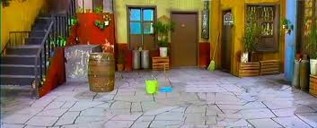

Seu Madruga está escondido para não pagar o aluguel, Você vai ajudar o Seu Barriga a acha-lo. Tem algumas pistas que poder ser seguidas.
Entramos na sala de aula para procurar pistas
Entramos na casa da dona Clotilde e encontramos o cachorro da bruxa
Encontramos um mapa que leva a acapulco.
Desistimos do aluguel.
Chegando na praia,você vê dois caminhos.
O cachorro disse que quico tinha a informação.